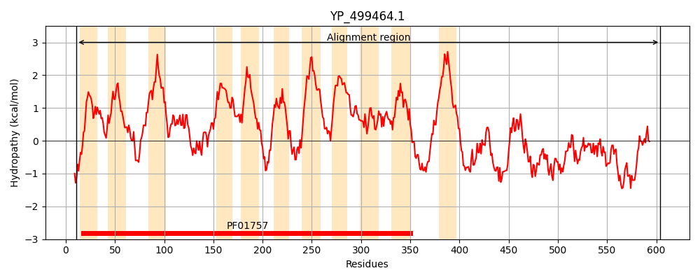
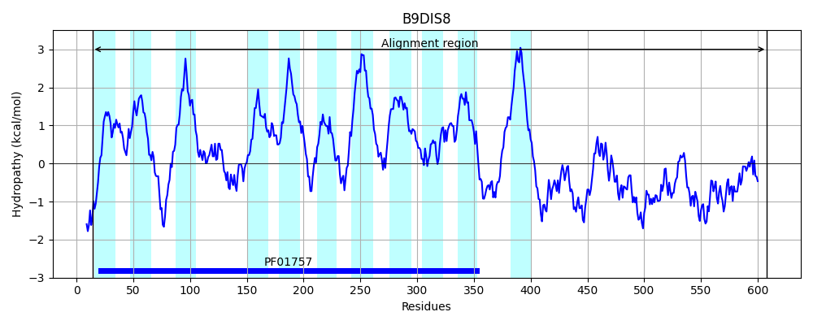
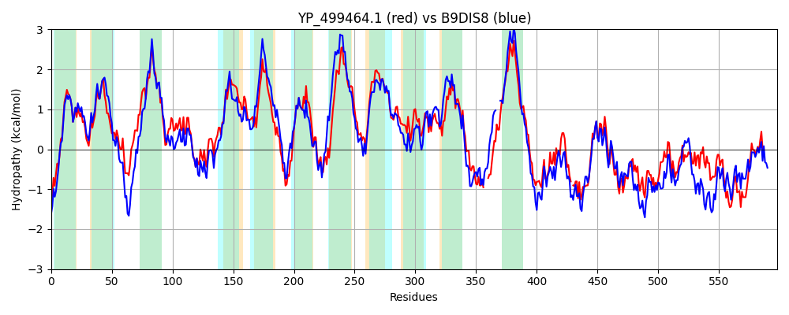

Hit Accession: B9DIS8
Hit TCID: 9.B.97.5.1
Hit Description: gnl|BL_ORD_ID|2154 gnl|TC-DB|B9DIS8|9.B.97.5.1 Putative membrane protein with acyltransferase 3 family domain OS=Staphylococcus carnosus (strain TM300) GN=Sca_0581 PE=4 SV=1
Mach Len: 598
e:0.000000
Query TMS Count : 11
Hit TMS Count: 11
TMS-Overlap Score: 9.500000
Predicted Substrates:None
BLAST Alignment:
Score: 1987 , Bit scores: 770 bits, E-value: 0.0e+00, Alignment length: 598, Percentage identity: 63
Query: 11 KKMRYIPGLDGLRAIAVLGIIIYHLNKQWLTGGFLGVDTFFVISGYLITSLLLKEYDDTGIIKLKSFWIRRLKRLLPAVIVLLMVVGTATLLLKSDNIIRVKHDIIAAIFYVSNWWYIAKDVNYFEQFSFMPLKHLWSLAIEEQFYIFFPVILVTLLLTIKKRYKIGFIFWGVSIISLGLMMFIYSINGDHSRVYFGTDTRLQTLLLGVILAFLWPPFKLKNDPPKVVKYVIDSIGSLSFIVLILLFFIINDETNWIYDGGFYLISILTLFIIASVVHPSTWIAKIFSNPVLVFIGKRSYSLYLWHFAVISFVHSYYVDGQIPVYVYFIDISLTIIFAELSYRFIETPFRKEGIKAL---NWRPSYIPQFIRMAIVVTLLIPFMLILVGAFNKYGKDIIGEKANSFDTTIEDNYLMRIAPIDNIHIDGL-VSEKKKESSDVYNNIKPLLIGDSVMVDIGESFKSSVPKSRIDGKVGRQLYQTLPLVKANYSQYKKSSDQVVLELGTNGDFTVKQLDDLLNQFGKAKIYLVNTRVPRIYEANVNRLLADAAKRKSNVTLIDWYKRSQGHSEYFAPDGVHLEYKGVLALKDEILKALKKK 604
KKM Y+PGLDGLRAIAVLGIIIYHLNKQWL GGFLGVDTFFVISGYLITSLLL EY G I LK FW RR+KRL+PA++ ++ +V TLLL+ + IIRVK D AA+FYVSNWWYIAKDVNYF+QFSF PLKHLWSLAIEEQFY+FFPV+L+ LL +KK +I IFW +S+ISL M+ + + SRVYFGTDTRLQTLLLGVILAFLWPP +LK +PP V+ V+D +G ++ +L+ LF ++D++ WIY+GGFYLIS +TLF+IAS+VHPS +A+ NPV V++GKRSYSLYLWHF VI F H Y+V GQIP+YVYFID+ LT+I AE SYR++ETPFRK+G KAL NW S I IR +++ +LIPF+LIL G F+KYGKD +G+KA FDT D Y++R P + G + +E++DVY++++PLLIGDSVMVDIGE FK SVP+S IDGKVGR +YQ PL+ + YS Y K D+V++ELGTNGDF QLD ++N FGKA +YLVNTRVPR YE +VN L+ +AA + NV L+DWY RS GH+EYFAPDG+HLEY GV AL DEI+K ++ K
Sbjct: 14 KKMNYMPGLDGLRAIAVLGIIIYHLNKQWLAGGFLGVDTFFVISGYLITSLLLIEYKKNGKIDLKKFWTRRIKRLIPAMVFVVSIVTIVTLLLQREEIIRVKQDAFAALFYVSNWWYIAKDVNYFDQFSFEPLKHLWSLAIEEQFYLFFPVVLILLLNKVKKPKQITLIFWVISLISLLAMVLLTHPGMNFSRVYFGTDTRLQTLLLGVILAFLWPPNRLKKEPPLAVRSVVDIVGVIALAILVCLFIYVDDQSYWIYNGGFYLISGITLFLIASIVHPSGLLARFMGNPVFVYLGKRSYSLYLWHFPVIIFTHRYFVAGQIPIYVYFIDLVLTVIMAEFSYRYVETPFRKKGFKALSIGNWTKSNI---IRWILILLILIPFVLILAGLFDKYGKDTVGDKATQFDTNSIDKYVVRPIPYGKMDFLGNGGGTESEENTDVYDDVQPLLIGDSVMVDIGEHFKESVPRSVIDGKVGRNMYQAKPLIDSQYSHYNKKGDKVIIELGTNGDFDKNQLDTVINSFGKADVYLVNTRVPRDYEKHVNDLMKEAAAKHKNVKLVDWYSRSAGHTEYFAPDGIHLEYSGVKALSDEIIKTMRLK 608 | Protein Hydropathy Plots: |
|---|
|  |  |
Pairwise Alignment-Hydropathy Plot:
|
|---|
|  |